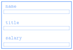

A Construction Zone
Jed Rembold
November 1, 2024
Announcements
- ImageShop due on Monday!
- Exam 2 is a week from today!
- Practice exams and learning objectives posted this afternoon
- On Chapters 4-6, and 8 (graphics, functions, and lists)
- No problem set next week: just studying for exam
- I’ll have PS5 graded this weekend
- Polling: polling.jedrembold.prof
Constructing a Type
Classes as Record Templates
- Since they share the same attributes, it is natural to regard the two employees at Scrooge and Marley as two instances of the same class
- Could view the class as a template or empty form:

- Can help initially to just start with an empty template and then fill in the necessary fields
Starting Empty
Class definitions in Python start with a header line consisting of the keyword
classand then the class nameThe body of the class will later contain definitions, but initially can just leave blank
- Almost. Python does not allow an empty body, so need to include a
docstring or use the
passkeyword
class Employee: """This class is currently empty!"""- Almost. Python does not allow an empty body, so need to include a
docstring or use the
Once the class is defined, you can create an object of this class type by calling the class as if it were a function:
clerk = Employee()
More References
- Instances of custom Python classes are mutable
- Thus custom class instances are stored as references to that information in memory
- Any code with access to this reference can manipulate the object
- Can get or set the contents of any attributes or create new ones
- Can get or set the contents of any attributes or create new ones

Selecting Object Attributes
You can select an attribute from an object by writing out the object name, followed by a dot and then the attribute name.
As an example
clerk.namewould select the
nameattribute for theclerkobject
Attributes are assignable, so
clerk.salary *= 2would double the clerk’s current salary
You can create a new attribute in Python by simply assigning a name and a value, just like you’d define a new variable
Assigning Clerk Attributes
We could, for instance, create a
clerkin the following fashion:def create_clerk(): clerk = Employee() clerk.name = "Bob Cratchit" clerk.title = "clerk" clerk.salary = 15 return clerkNote that none of these assigned attributes affect the
Employeeclass in any way: they are only affecting theclerkobject
More Generally
We could accomplish this more generally by passing arguments to our function:
def create_employee(name, title, salary): emp = Employee() emp.name = name emp.title = title emp.salary = salary return empWe could then use that as:
clerk = create_employee('Bob Cratchit', 'clerk', 15) boss = create_employee( 'Ebeneezer Scrooge', 'founder', 1000 )
Constructors
- While the previous method works, it is not ideal
- Forces the client to tinker with the internal workings of the Employee
- Details of the data structure are the property of the implementation, not the client
- Better to add a method (function) to the
Employeeclass called a constructor, which is responsible for initializing attributes of a newly created object- In Python, a constructor is created by defining a special function
named
__init__ - The constructor function is called automatically whenever a new object of that type is created
- In Python, a constructor is created by defining a special function
named
Know Thy self
- Moving the function into the Employee class has a
problem:
- When we set attributes, they are specific to a given object
- The class itself though is just a template, and not linked to a specific object
- We need a general way within the class to refer to
whatever object is being created
- The overwhelming convention in Python is to call
this variable
self - Whenever a new object is created, you could imagine
that, for that object, Python replaces all of the
selfs in the class with that object’s name- This isn’t quite the order of what is happening,
but it can help envision what
selfis doing
- This isn’t quite the order of what is happening,
but it can help envision what
- The overwhelming convention in Python is to call
this variable
selfis always the first parameter to the__init__constructor- Any other arguments provided are passed in as additional parameters afterwards
An Employee Constructor
class Employee:
def __init__(self, name, title, salary):
self.name = namey
self.title = title
self.salary = salary
clerk = Employee('Bob Cratchit', 'clerk', 15)- Note that you do not need to provide an argument for
selfwhen creating the object, Python supplies this reference automatically - Viewing in PythonTutor can be helpful, as is shown here
Understanding Check
What is printed out on the final line of code to the right?
Honda red 2006Honda blue 2006Toyota blue 2008Honda red 2008
class Car:
def __init__(self, color, year):
self.color = color
self.year = year
self.make = 'Toyota'
A = Car('blue', 2008)
A.make = 'Honda'
B = Car('red', 2006)
A.year = B.year
print(A.make, A.color, A.year)Adding Behavior
What’s your Method?
Most classes define additional functions called methods to allow clients to read or update attributes or manipulate the object
Methods look like a normal function definition but will always declare the parameter
selfat the beginning of the parameter list- This is true even if the method has no other parameters
Methods are defined in the body of the class and would thus look something like:
def |||method name||| (self, |||other parameters|||): |||...body of the method...|||For example
def give_raise(self, amount): self.salary += amount
Accessing and Using Methods
- Once defined, there are two mains ways you can access and use the
method:
- Dot Notation (Conventional)
Python sets
selfto be a reference to the receiver, which is the object to which the method is applied (the object that comes before the dot)clerk = Employee('Bob', 'clerk', 15) clerk.give_raise(15)
- Function Notation
You retrieve the method from the class itself, and then provide
selfmanually, whereselfis the object you want to act onclerk = Employee('Bob', 'clerk', 15) Employee.give_raise(clerk, 15)
- Dot Notation (Conventional)
Visualization Summary
- To summarize in a visual manner, we can look at everything together on PythonTutor

Getters and Setters
In the abstraction boundary model, the client is not supposed to muck-about with the object internals
The implementation should therefore provide methods to retrieve desired attributes (called getters) or to make changes to desired attributes (called setters)
Setting up getters and setters for the attribute
salarymight look like:def get_salary(self): return self.salary def set_salary(self, new_salary): self.salary = new_salaryGetters are far more common than setters, as you don’t always want the client to have the freedom to change attributes on a whim
Internal Representation
- The idea behind object-oriented programming and the abstraction boundary is that we interact with the class though methods, and the class takes care of the internal representation
- Python works well with this, but it doesn’t really enforce it
- We can freely access, change, or even add new attributes to the class
- But in most cases, we really should not
- Maybe the class will get updated in a way that changes all the internal variable names. Now all our code referring to them is broken!
- Use (and define) getters and setters for your classes!
- Convention is that we preface a class attribute with an underscore
if we really want to make clear that the client should
not mess with that attribute
- This is just convention. Python will still allow it to be altered, but it is a bad practice to get in the habit of doing
More Dunder Methods
Representation
Printing out an object that you just created as an instance of a custom class will look ugly:
>>> C = Employee('Bob', 'clerk', 15) >>> print(C) <__main__.Employee object at 0x7f942ba13550>You can define special methods for a class that specify how your object should be converted to a string (or anything else really)
- All these special methods have double underscores before and after, and hence are frequently termed “dunder” (double underscore) methods
- Define the
__str__or__repr__method to specify how your object should be printed- These should return a string
A Good Employee
class Employee:
def __init__(self, name, title, salary):
self.name = name
self.title = title
self.salary = salary
def __str__(self):
return f"{self.name} ({self.title}): {self.salary}"
def get_salary(self):
return self.salary
def set_salary(self, new_salary):
self.salary = new_salaryExample!
A Dazzling Display
from pgl import GWindow, GOval, GRect
import random
GW_WIDTH = 500
GW_HEIGHT = 500
def random_color():
color = "#"
for _ in range(6):
color += random.choice("0123456789ABCDEF")
return color
class Firework:
""" Creates a new firework with initial flight and then
explosion.
"""
def __init__(self, size):
self.obj = GOval(GW_WIDTH/2, GW_HEIGHT, size, size)
self.obj.set_filled(True)
self.obj.set_color("white")
self.speed = 5
self.heading = random.randint(60,120)
self.fuse = random.randint(50,100)
self.maxsize = random.randint(60,100)
self.color = random_color()
self.mode = 0
def get_object(self):
""" Returns the firework graphical object. """
return self.obj
def should_terminate(self):
""" Checks if the firework should be removed. """
return self.mode > 1
def move(self):
""" Moves the firework in its initial flight. """
self.obj.move_polar(self.speed, self.heading)
self.fuse -= 1
if self.fuse < 0:
self.mode += 1
self.obj.set_color(self.color)
def explode(self):
""" Grows the firework explosion upon detonation. """
R = 2
x = self.obj.get_x()
y = self.obj.get_y()
S = self.obj.get_width()
self.obj.set_bounds(x-R/2, y-R/2, S+R, S+R)
if self.obj.get_width() >= self.maxsize:
self.mode += 1
def update(self):
""" Controls what the firework should be doing during
each stage.
"""
if self.mode == 0:
self.move()
elif self.mode == 1:
self.explode()
def fireworks_show():
""" Makes a fireworks show! """
def step():
""" Calls up update method on all fireworks in the box
and removes if necessary.
"""
for f in firework_box[:]:
f.update()
if f.should_terminate():
gw.remove(f.get_object())
firework_box.remove(f)
def give_me_more_fireworks():
""" Adds more fireworks to the box. """
new = Firework(2)
firework_box.append(new)
gw.add(new.get_object())
gw = GWindow(GW_WIDTH, GW_HEIGHT)
sky = GRect(GW_WIDTH, GW_HEIGHT)
sky.set_filled(True)
gw.add(sky)
firework_box = []
gw.set_interval(step, 20)
gw.set_interval(give_me_more_fireworks, 100)
if __name__ == '__main__':
fireworks_show()